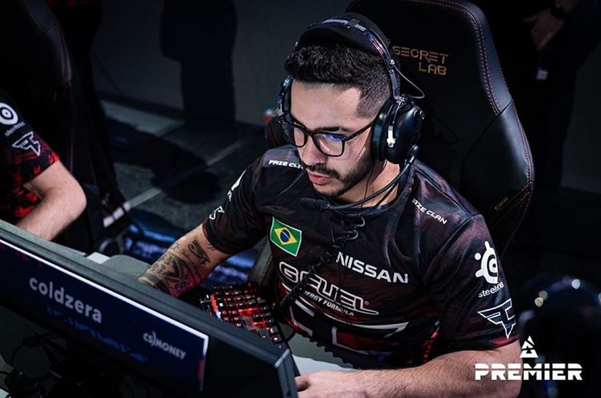

CS:GO: coldzera tem proposta da 00Nation
Marcelo "coldzera" está nos planos da 00Nation. O duas vezes melhor do mundo no Counter-Strike: Global Offensive tem uma oferta para defender a organização no ano que vem e voltar a atuar por um time brasileiro, o que não acontece desde 2019, quando o jogador deixou o MIBR. Desde então, coldzera jogou pelas europeias FaZe Clan e Complexity.
De acordo com informações apuradas pelo ge, coldzera e a 00Nation conversaram nas últimas semanas, e a organização apresentou um projeto que agradou o jogador, inclusive com a possibilidade de buscar outros reforços. A informação também foi publicada pelo The Enemy.
A oferta da 00Nation não é a única. Coldzera também tem conversado com organizações internacionais e ainda não bateu o martelo sobre seu futuro.
Ele se mudou recentemente para Lisboa, em Portugal, e deve levar a família para lá em breve. Por isso, o jogador deseja ter uma equipe baseada na Europa. A 00Nation é de Oslo, na Noruega.